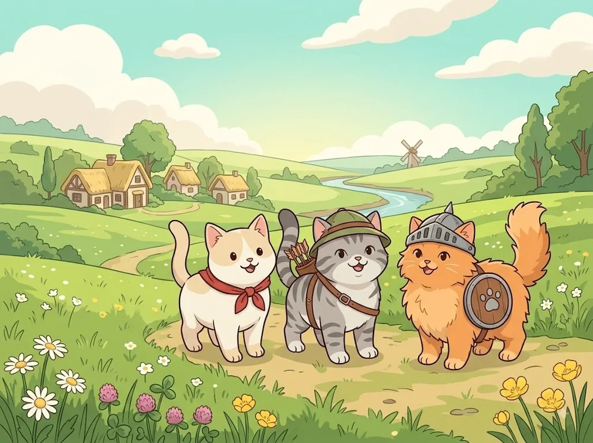
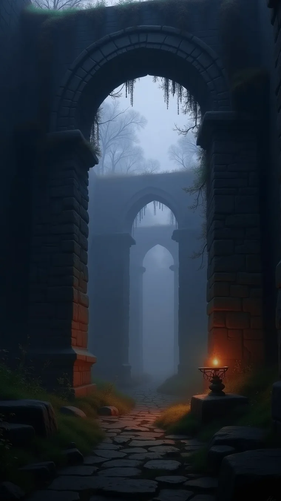
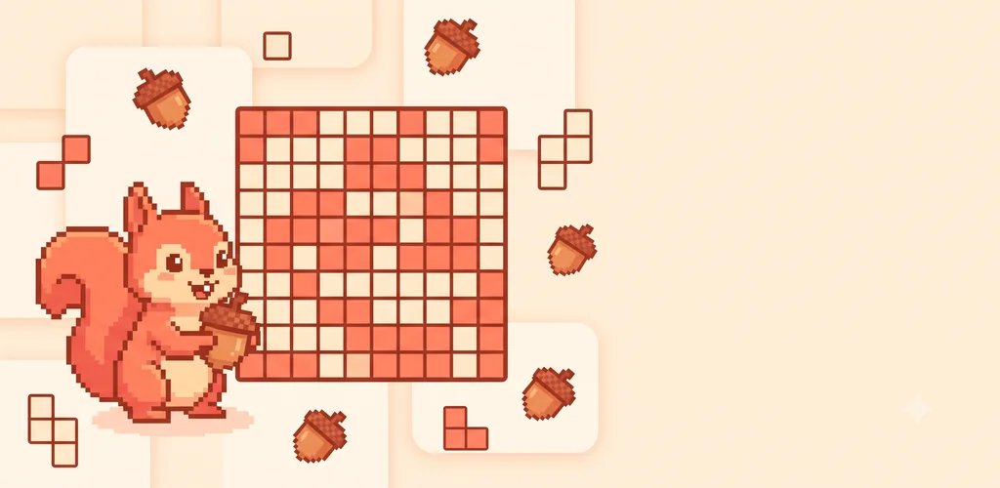
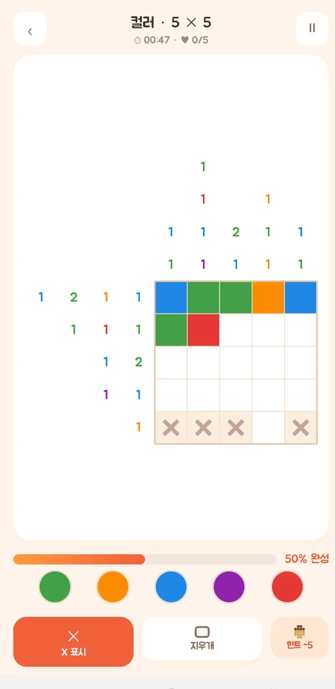
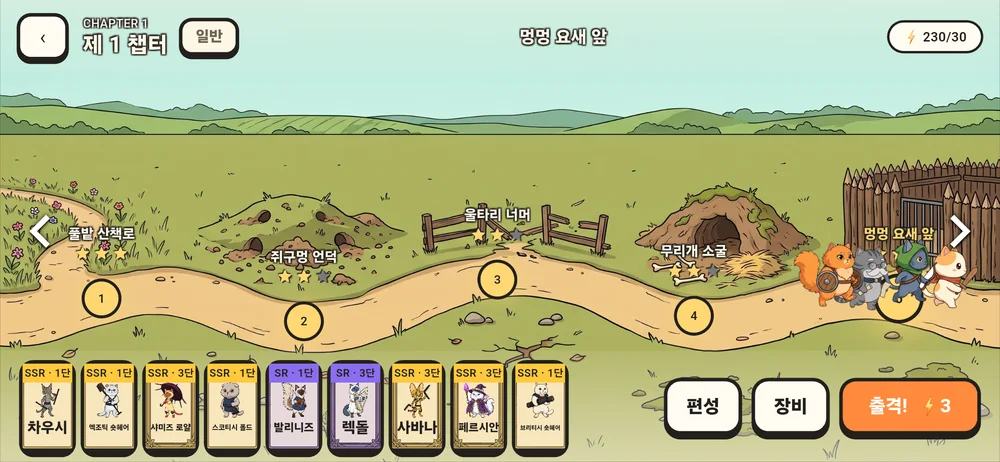
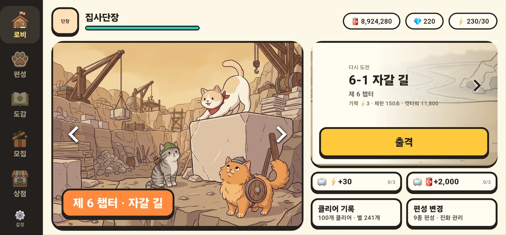
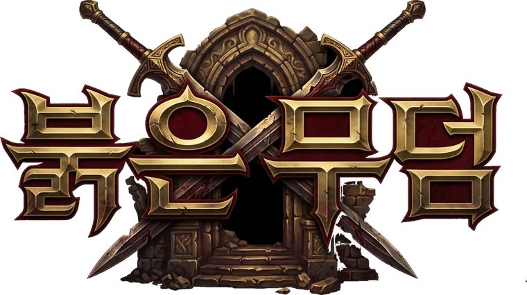

네모네모로직 · 노노그램 퍼즐
숫자 힌트를 읽고 칸을 채워 숨은 그림을 맞추는 퍼즐입니다. 고전 흑백과 다섯 색을 쓰는 컬러 모드를 함께 담았고, 퍼즐은 서버 없이 앱 안에서 계속 만들어집니다.
전진형 실시간 전투
고양이 용병을 편성해 개들의 요새로 밀고 나아갑니다. 추르를 모아 다음 고양이를 내보내는 사이, 전선은 계속 움직입니다.



파티 기반 던전 RPG개발 중
종족과 직업을 골라 넷을 꾸리고, 무덤 아래로 내려갑니다. 함정과 사건이 길을 가로막고, 데려간 넷이 그대로 돌아오지는 않습니다.